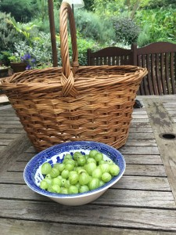
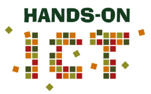
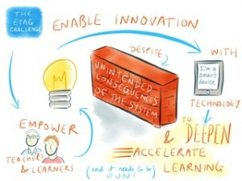
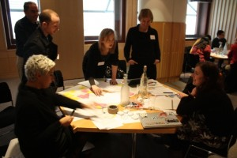
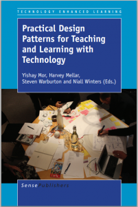
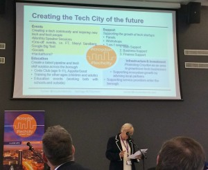

I’ve just picked some juice gooseberries on a lovely sunny day in England in June…

but the MirandaNet newsletter calls….
Here are the topics:
- Events: Two MirandaMods: 27th June, 9th July
- Our ETAGS submission on elearning technology and policy
- Five new MirandaNet Fellowship awards
- The death of the book is imminent?
- MirandaLink is buzzing
- Croydon, the new Silicon Valley of South London
- Current research projects- Group Call
- Our team is expanding
Events

Moocs and Moodle in education and business
27th June MirandaMod from Slovenia UK time: GMT 10.00-11.30 – CET 11.00-12.30
Funded by the EU LLL HandsOn ICT project on MOOCs Sarah Younie and Christina Preston are giving a paper at the MakeLearn conference in Slovenia and running a MirandaMod.
Details are here
Thanks to Brother, Omnijoin and LightSpeed for the technical support.
1st-5th July IFIT conference in Potsdam
Funded by the EU LLL HandsOn ICT project on MOOCs Sarah Younie and Christina Preston are giving a paper at the IFIT conference in Potsdam and running a tutorial for the participants of the 3.3 IFIT strand. We expect to meet some MirandaNet Fellows: Dr Mirka Cernochova, Lawrence Williams and Keith Turvey. Any more?
9th July MirandaMod 1600-1730
What is a learner-centred MOOC?
Led by Yishay Mor after a workshop about Learning Design at the London Knowledge Lab.
Details to follow.
The ETAGs submission to UK Ministers: Gove, Hancock and Willetts.
You will find our website, MirandaNet Transforming Education; making policy here. We think this should be the beginning of a wider engagement in commenting on existing policies and developing new ideas and approaches collaboratively. Ministers are also looking for schools with good practice to visit. Please send suggestions: christina@mirandanet.ac.uk

MirandaNet members have done more for the ETAGs submission to the three UK Ministers than was probably required. In fact, we have not only submitted to ETAGs but created a website of though- pieces and an overview of where members think policy should be heading in the future based on our collaborative past and present knowledge and experience.
Many thanks to the members who joined in the face to face and online knowledge creation events. If we do nothing else but start the process of creating, supporting and participating in creation of a large scale data hub for Education based on the principals of data management services for advancing teaching and learning this will be a huge contribution. This critical paradigm shift will enable the UK to maintain and be Education leaders. However, this decision requires putting education, the learners and the teaching professionals centre stage. Building around such decisions, such as CPD, shared knowledge and practice through the large communities and networks that exist will be essential. Any systems set in place must work beyond a particular government.
Education and its needs are long term and if nothing else is possible then resources built by society should be accessible by the society if they are to bring national and international benefit.
Such a change in policy setting will require privacy and citizen rights of access and protection of use to be set at the foundation. Companies and governments making inappropriate use of the data should be held to the highest accountability.
Five new MirandaNet Fellowship awards
As I have said before we hope every member who has joined as a scholar will want to share at least one case study, blog, article, talking head or other communication with other members. As you know we do not charge you for membership because, in fact, your publications are priceless to teachers all over the world: 72,000 new visitors each year to the MirandaNet website who often return and read from 5-11 pages. The only criteria is that the piece must be interesting to other educators. Each Fellow receives a certificate and a badge to put on your email signature.
Dr Patricia Charlton
Patricia who is a member of the MirandaNet team has put together the MirandaNet ETAGs policy submission from members’ submissions at face to face meetings and online. She has carefully sifted through members’ opinions to represent as accurately as possible what members wanted to say. This submission is good enough for MirandaNet to build on as a policy statement. Patricia has loaded the summary here.
Poncelet O. Ileleji, Gambia
A Fellowship to our good friend from Gambia, Poncelet O. Ileleji, who often posts in MirandaLink. He has submitted a policy research paper about implementing ICT by integrating the topic into the curriculum in schools in the Gambia which is in sub-saharan Africa.
He wonders if a member in another country would like to do a comparative study working in partnership with him in this project: Open Call for Expressions of Interest to conduct studies on the Impact of Open Educational Resources on Education and Training in Asia and Sub-Saharan Africa. You can find his contact details in the members area if you want to contact him about this.
Rajvir Cheema, UK
This time we are pleased to award Fellowships to two students of Sarah Younie’s at DMU, Rajvir Cheema and Atisha Parmar/ ?They will be sent a certificate and a badge for their email signature.
Rajvir Cheema’s study is about Engaging young learners through Digital Game Based learning. The research found most learners had an interest in DGBL and showed high levels of engagement in most sessions. They also show that DGBL can develop a range of skills which include peer learning, communication, teamwork and problem solving. Findings also revealed elements of competition, control over learning and learner autonomy as additional themes.
Atisha Parmar, UK
Atisha Parmar has studied The use of data management systems for e-leadership and school improvement. The results and feedback from the questionnaire indicated that target tracker is providing extensive support for the school by analysing pupil progress, evaluating teaching and learning, managing teachers performance and improving on the schools performance by comparing data; thus increasing the pedagogical effectiveness of the school. E-leadership allows the school to quickly monitor any implementations and promote evidence-based decisions, in order to raise the level of pupil achievement and school improvement.
Mark J.W. Lee
Mark has submitted a Case study that focuses on social networking: supporting peer-to-peer e-mentoring of novice teachers using social software here
This case involves the use of social software tools to support both text- and voice-based peer-to-peer mentoring of pre-service teachers during their practicum placements. The participants were enrolled in the Australian Catholic University’s Graduate Diploma of Education (Secondary), which is a one-year, entry-level program that allows graduates in non-education disciplines to become qualified secondary school teachers. The aim of the exercise was to establish an effective peer support system, offering mentoring capacities such as emotional support, feedback, and encouragement in an attempt to alleviate issues related to professional isolation and anxiety. The practicum experience can be challenging and intimidating for students, as for the first time in their course, they are separated from their instructors and classmates, and are expected to apply what they have learned within a real school setting. Furthermore, it was hoped that the e-mentoring exercise would encourage participants to engage in reflective practice, which is one of the essential outcomes of the pre-service teacher education curriculum.
You can read the full study here.
The death of the book is imminent?
Well, members made it clear in our lively debate that the book is alive and well although enhanced by computer technology and complemented by other media. You can look up the detail in the members’ archive. Please send us copies (or .pdfs) of books you would like us to review in the future.
Meanwhile members have been busy publishing books that you might want to read:
- About theory and practice in digital technologies: four books by members are reviewed here:
Practical Design Patterns for Teaching and Learning with Technology: Yishay Mor, Harvey Mellar, Steven Warburton and Niall Winters (Eds) Read More
A Call to Action: Teaching with Technologies: the Essential Guide: Marilyn Leask and Sarah Younie Read more
Narrative Ecologies: Teachers as Pedagogical Toolmakers: Keith Turvey Read more...
The ultimate guide to using ICT across the curriculum: Jon Audain Read more…
- Biography, fiction and poetry: members are now writing or editing books with their relatives that they would not have been able to do even five years ago. We’d like examples of more members’ books and books by children. Here are three to start the process:
- Heaven or not, by Ben Hramiak, son of member Alison, on free website
- Suet to Souffle by Joyce Horlock, memoirs, edited by her daughter, Christina Preston, on the Lulu publishing website. Rather expensive because of all the colour photos but you can read quite a few pages for free. We are running workshops for senior citizens for charity about writing memoirs. Ask for details:christina@mirandanet.ac.uk
- Back to the Writing; edited by Christina Preston and Debby Grayson, an assortment of musings in poetry and prose about life in general published by a small, local writing group who meet each Friday: again on the Lulu publishing site.
- Blogs: I know a blog is not a book – but a good example of how the internet has allowed so many more people to express their views in timely fashion. A book would not be the best medium here. Three members blogs to be recommended. Do suggest some more… Dr Chris Yapp; Theo Kuechel; Terry Freedman. More recommendations? We plan to have a place for members’ blogs on the new website.
MirandaLink is buzzing
There have been some very lively debates on MirandaLink this term especially: What is the difference between open source and proprietary systems? and The demise of the book is imminent? In some ways new members might be taken aback if they happen to join MirandaLink when a debate is in full spate. But like other professional organisations we have found that if we move to a forum the debate loses pace and members.
However, you do not need to suffer mail overload. You can unsubscribe from mirandalink and still get the newsletter but better still, as Francis Howlett, our hardworking web editor, explains:
You can opt out and in of MirandaLink at any time without actually unsubscribing, or you can just receive the digest – which is sent when it reaches a certain size, 30KB, or daily, whichever is sooner. You can also safely delete all the messages after (or before!) reading as they are in the members’ archive, which can be viewed by author or date or thread.
The archive is sorted by subject, so if you want to change subject whilst still in a particular thread, you should change the heading of the message. And by the way, there is a size limit for MirandaLink messages, so attachments are usually better as a link rather than as an attachment.
You might be confused because messages are sent TO mirandalink@mirandanet.ac.uk, whilst they are sent FROM mirandalink-bounces@mirandanet.ac.uk so that you don’t get all the return receipts and error messages. But if you send TO mirandalink-bounces@mirandanet.ac.uk the message will, um, bounce…
Thanks to Francis who keeps the MirandaNet website functioning at all times.
EU LLL Handson ICT MOOC

Nearly 1,000 participants joined the second pilot of the HandsOn ICT including a number of members of the MirandaNet MOOC SIG. The pilot was led by Yishay Mor, also a MirandaNet member who has been running workshop about the Learning Design Studio. This is a collaborative, blended, project-based framework for training teachers in effective and evidence-based use of educational technology. In their paper about the Learning Design Studio, Mor and Mogilevsky (2013) argue that teachers are the primary change agents in any educational system. Several decades of research have produced an extensive body of scientific knowledge of effective ways to use technology to support learning. “If we want to mainstream this knowledge and use it to improve educational systems, we need to make this knowledge available to educational practitioners. The dominant model of teacher education assumes that teachers should be provided with a solid theoretical curriculum, which they will then apply in their practice”. In contrast, Mor and Mogilevsky are arguing for an alternative, a more learner-centred approach – the design-inquiry model. They offer the learning design studio as a manifestation of this model. As a result by the end of the HandsOn ICT course, The participants will have an ICT-based learning activity ready to use in their classrooms and they will also have learned about the Learning Design Studio process and its main techniques.
We hope members will join the third pilot of this MOOC that starts in October. Meanwhile you can read more about this MOOC here.

The book by Mor et al. about designing learning has already been mentioned above. Practical Design Patterns for Teaching and Learning with Technology: Yishay Mor, Harvey Mellar, Steven Warburton and Niall Winters (Eds) Read More
Croydon, the new Silicon Valley of South London
The Mayor of London, Boris Johnson, is not only investing money in Croydon’s bricks and mortar but also in the digital infrastructure of this London Borough. On June 6th, Professor Preston, the founder of MirandaNet, who has lived in Croydon for more than 40 years, joined London’s foremost property developers, policy-makers and tech entrepreneurs to discuss Croydon’s place as London’s second ‘Tech City’. Croydon Tech City that ran the conference is an organisation and community that aims to make Croydon an accommodating home for early-stage digital and technical startups.

Speakers from the area covered four topics:
- Why Croydon Tech City works for us;
- Infrastructure and Investment in Croydon’s tech ecosystem;
- What it takes to create a tech culture; and,
- Creating the next generation of coders.
You can read more about Croydon TechCity here
Our team is expanding
Welcome to Ros Asher, Patricia Charlton and Joanna Wild who are joining the MirandaNet team as senior researchers.
You can see the full profiles of our core team, advisers and consultants here.
Very best wishes to all MirandaNetters
Christina Preston